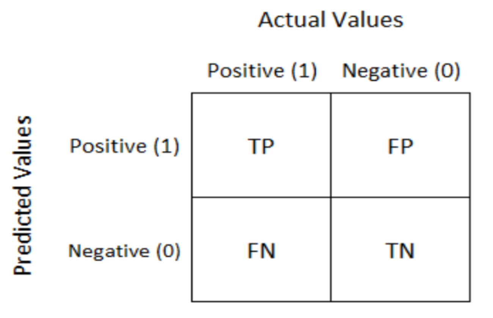

Machine Learning
Algorithm
Definition
An algorithm is a step-by-step set of instructions or rules used to solve a problem or perform a task.
Machine Learning
Definition
Machine learning is a subset of artificial intelligence that enables computers to learn and make decisions from data without being explicitly programmed.
Labeled Data
Definition
Labeled data is data that has been tagged or annotated with the correct output or classification.
Unlabeled Data
Definition
Unlabeled data is data that has not been tagged or annotated with the correct output or classification.
Machine Learning Types
-
Supervised Learning
Using labeled data to train algorithms.
-
Unsupervised Learning
Using unlabeled data to discover structures or groupings.
-
Reinforcement Learning
Learning by interaction with an environment, based on rewards.
Clustering
Definition
Clustering is the process of grouping similar data points together based on their features. This method is a method of supervised learning.
Classification
Definition
Classification is the process of assigning data points to predefined categories. This method is a method of supervised learning.
Regression
Definition
Regression is the process of predicting continuous values from input data. This method is a method of unsupervised learning.
Reinforcement Learning
Definition
Reinforcement learning is a method of machine learning where an agent learns to make decisions by interacting with an environment and receiving rewards or penalties.
Clustering Algorithms
-
K-Means
A clustering algorithm that partitions data into K distinct clusters based on feature similarity.
-
Mean Shift
A clustering algorithm that iteratively shifts data points towards the mode of the data distribution.
-
K-Medoids
A clustering algorithm that partitions data into K distinct clusters based on feature similarity, using actual data points as cluster centers.
Regression Algorithms
-
Decision Tree
A supervised learning algorithm that splits data into branches to make predictions.
-
Linear Regression
A supervised learning algorithm that models the relationship between a dependent variable and one or more independent variables.
-
Logistic Regression
A supervised learning algorithm used for binary classification problems.
Classification Algorithms
-
Naive Bayes
A supervised learning algorithm based on Bayes' theorem, assuming independence between features.
-
SVM
A supervised learning algorithm that finds the optimal hyperplane to separate data points into different classes.
-
K-Nearest Neighbors
A supervised learning algorithm that classifies data points based on the majority class of their k nearest neighbors.
Simple linear regression
Simple linear regression is a statistical method that models the relationship between a dependent variable and a single independent variable by fitting a linear equation to observed data. The equation of simple linear regression is typically represented as:
$$ y = mx + b $$Multiple linear regression
Multiple linear regression is a statistical technique that models the relationship between a dependent variable and two or more independent variables by fitting a linear equation to observed data. The equation of multiple linear regression is typically represented as:
$$ y = b_0 + b_1x_1 + b_2x_2 + ... + b_nx_n $$There also exists a matrix representation of the multiple linear regression equation:
$$ \begin{bmatrix} y_1 \\ \vdots \\ y_n \end{bmatrix} = \begin{bmatrix} 1 & a_{1,1} & \cdots & a_{1,p} \\ \vdots & \vdots & \ddots & \vdots \\ 1 & a_{n,1} & \cdots & a_{n,p} \end{bmatrix} + \begin{bmatrix} \theta_0 \\ \vdots \\ \theta_p \end{bmatrix} $$Logistic regression
Definition
Logistic regression is a statistical method used for binary classification problems. It models the probability of a binary outcome based on one or more independent variables.
Sigmoid Function
The logistic regression model uses the sigmoid function to map any real value into a probability between 0 and 1:
$$ \sigma(z) = \frac{1}{1 + e^{-z}} $$Correlation matrix
Definition
A correlation matrix is a table showing correlation coefficients between variables. Each cell in the table shows the correlation between two variables.
Evaluation metrics of Machine Learning
-
Clustering
Common metrics include silhouette score and Calinski-Harabasz index.
-
Classification
Common metrics include accuracy, precision, recall, and F1-score.
-
Regression
Common metrics include Mean Squared Error or MSE, Root Mean Squared Error or RMSE, and R-squared.
Clustering
Definition
Clustering is the task of grouping a set of objects in such a way that objects in the same group, called a cluster, are more similar to each other than to those in other groups.
Dimensionality reduction
Definition
Dimensionality reduction is the process of reducing the number of random variables under consideration by obtaining a set of principal variables.
Dimensionality Reduction Algorithms
-
Principle Component Analysis, PCA
A dimensionality reduction technique that transforms data into a new coordinate system, where the first component captures the maximum variance in the data.
-
Feature Selection
A dimensionality reduction technique that selects a subset of the original features based on their relevance to the target variable.
-
Linear Discriminant Analysis, LDA
A dimensionality reduction technique that projects data onto a new coordinate system, maximizing the separation between classes.
K-means clustering
-
Cluster
Collection of data points grouped together based on similarity. It represents a subset of the dataset that shares common characteristics.
-
Centroid:
The representative point of a cluster is called a centroid. It is the center of the samples that belong to the cluster and works as a prototype of the cluster. Finding the appropriate centroids that partition samples in a good manner is the goal of the K-means algorithm.
Definition
K-means clustering is an unsupervised machine learning algorithm that partitions a dataset into k distinct, non-overlapping clusters based on the similarity of data points. It uses unlabeled data to identify patterns.
K-Means Algorithm
-
Select the number of clusters $k$ and randomly initialize $k$ centroids.
-
Assign each data point to the nearest centroid, forming $k$ clusters.
-
Update the centroids by calculating the mean of all data points in each cluster.
Repeat steps 2 and 3 until convergence.
Remark
K-Means uses Euclidean distance $d$ to measure the similarity between data points and centroids.
$$ d = \sqrt{(x_2 - x_1)^2 + (y_2 - y_1)^2} $$K-Means Optimisation with elbow method
The elbow method is a heuristic used to determine the optimal number of
clusters $k$ in K-Means clustering. It involves plotting the sum of
squared errors or SSE against the number of clusters and identifying the
elbow
point where the rate of decrease sharply changes.
K-nearest neighbors, KNN
Definition
K-nearest neighbors is a non-parametric method used for classification and regression. In both cases, the input consists of the $k$ closest training examples in the feature space. It uses labeled data to identify patterns.
K Nearest Neighbors Application
To classify a new data point into one of the two existing categories, we use the KNN algorithm. Based on the spatial proximity of points, KNN assigns to the new point the category that contain the most of nearest neighbours .
K Nearest Neighbors Algorithm
-
Choose the number of neighbors $k$.
-
Calculate the distance between the new data point and all training data points.
-
Identify the $k$ nearest neighbors based on the calculated distances.
-
For classification, assign the most common class among the $k$ neighbors to the new data point. For regression, calculate the mean value of the $k$ neighbors and assign it to the new data point.
Remark
The most commonly used algorithms for KNN use the following distance metrics:
-
Euclidean Distance: $d = \sqrt{(x_2 - x_1)^2 + (y_2 - y_1)^2}$
Manhattan Distance: $d = |x_2 - x_1| + |y_2 - y_1|$
-
Minkowski Distance: $d = (|x_2 - x_1|^p + |y_2 - y_1|^p)^{1/p}$
-
Cosine similarity: $ \cos(\theta) = \frac{\vec{A} \cdot \vec{B}}{||\vec{A}|| \cdot ||\vec{B}||} $
Elements of a Confusion Matrix
-
True Positive, $TP$
The number of instances where the model correctly predicted the positive class.
-
False Positive, $FP$
The number of instances where the model incorrectly predicted the positive class
-
True Negative, $TN$
The number of instances where the model correctly predicted the negative class.
-
False Negative, $FN$
The number of instances where the model incorrectly predicted the negative class.
Confusion Matrix
Definition
A confusion matrix is a table used to evaluate the performance of a classification model. It shows the counts of correct and incorrect predictions for each class.
Classification metrics
-
Accuracy
The proportion of true results, both true positives and true negatives, among the total number of cases examined.
$$ \text{Accuracy} = \frac{TP + TN}{TP + TN + FP + FN} $$ -
Precision
The proportion of true positive results in the predicted positive cases.
$$ \text{Precision} = \frac{TP}{TP + FP} $$ -
Recall, Sensitivity
The proportion of true positive results in the actual positive cases.
$$ \text{Recall} = \frac{TP}{TP + FN} $$ -
F1-Score
The harmonic mean of precision and recall, providing a single metric that balances both concerns.
$$ \text{F1-Score} = 2 \cdot \frac{\text{Precision} \cdot \text{Recall}}{\text{Precision} + \text{Recall}} $$or expressed in only classification terms:
$$ \text{F1-Score} = 2 \cdot \frac{\text{Precision} \cdot \text{Recall}}{\text{Precision} + \text{Recall}} $$ $$ = 2 \cdot \frac{\frac{TP}{TP + FP} \cdot \frac{TP}{TP + FN}}{\frac{TP}{TP + FP} + \frac{TP}{TP + FN}} $$ $$ = 2 \cdot \frac{\frac{TP}{TP + FP} \cdot \frac{TP}{TP + FN}}{\frac{TP}{TP + FP} \cdot \frac{TP + FN}{TP + FN} + \frac{TP}{TP + FN} \cdot \frac{TP + FP}{TP + FP}} $$ $$ = 2 \cdot \frac{TP^2}{TP^2 + TP \cdot FP + TP \cdot FN + FP \cdot FN} $$ $$ = \frac{2 \cdot TP^2}{2 \cdot TP^2 + TP \cdot FP + TP \cdot FN + FP \cdot FN} $$
Regression metrics
-
Mean Squared Error, MSE
The average of the squared differences between the predicted values and the actual values.
$$ \text{MSE} = \frac{1}{n} \sum_{i=1}^{n} (y_i - \hat{y}_i)^2 $$ -
Mean Absolute Error, MAE
The average of the absolute differences between the predicted values and the actual values.
$$ \text{MAE} = \frac{1}{n} \sum_{i=1}^{n} |y_i - \hat{y}_i| $$ -
Root Mean Squared Error, RMSE
The square root of the mean squared error.
$$ \text{RMSE} = \sqrt{\text{MSE}} $$ -
R Square, R2
The proportion of the variance in the dependent variable that is predictable from the independent variables.
$$ R^2 = 1 - \frac{\sum_{i=1}^{n} (y_i - \hat{y}_i)^2}{\sum_{i=1}^{n} (y_i - \bar{y})^2} $$